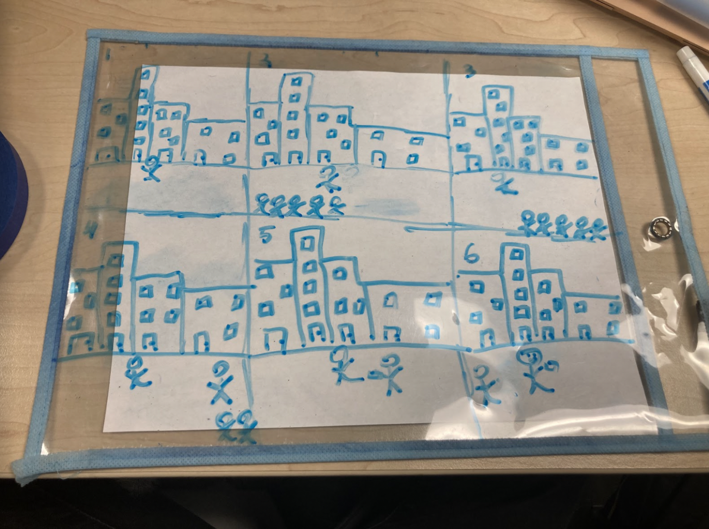

Our team was tasked with the ability of showing a social issue to the world in a tech-related format. We wanted to do a problem that was more people-related. We decided on doing homelessness. Here is our process from beginning to end:
This cause and effect model of how homelessness is affecting the world shows the indifference of human beings and how they act towards others. Hopefully, our animation will turn people's mindsets to how we truly want them to see.
To create our animation we needed people to populate our story. Our characters needed to be real human beings so that they could express the emotion and the harshness of the actual reality. Our storyboard was the representation of the severity that we were going to portray.
This is where our ideas and designs came to life. The work that my team did trying to make our coding and make it into a real story can be seen here. Unfortunately, we were not able to finish our project. However, my team and I did the best we could to make the finished product. Hopefully, you as well can see our desired outcome.
This is the progress of our work from the beginning to the endpoint. Going through this log helped us to see what needed more attention and what didn't.

This is our final product photo. As we could not have a completed video, we did photos of what we did have. Sorry again and I hope you can understand.
This is my reflection and how I felt about doing this project, as well as what I did.
I worked on the characters and the storyboard. I used the cricut cutter for the character shadows and put them all together. I also worked on the storyboard as me and my teammates didn’t have one yet even though we had an idea. (Me, personally, thought that the storyboards were only for people doing stop motion; as we weren’t doing that we didn’t make it a priority. However, in today’s class I finalized the storyboard for the website.
My teammates were mostly working on the coding for our project that was going to move the characters and create shadows. I specifically worked on the 3D models than the coding, as I felt more comfortable with crafting than coding.
Our work should tell people the struggles of homelessness and how there are some nice people even though other people can be not so nice. We’re hoping to show how hard homelessness can be and how that can affect other people.
These are just random background photos that we happened to have. It shows how our work happened and how we were trying to finish.